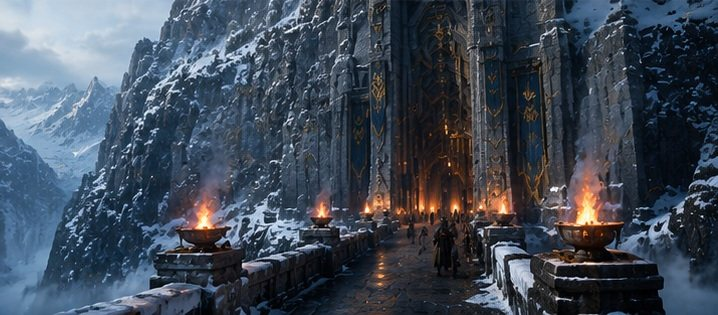

✦
Organizacje
Grupy, bractwa i zakony świata
Zorganizowane grupy działające w Atlamarze i Ruunis: elitarne drużyny, zakony i bractwa, o których krąży wiele opowieści.
◆Siódemka Korzennej Krwi

Legendarna siódemka najpotężniejszych wojowników regionu, związana z Khar-Duum.
Zobacz stronę organizacji →
Atlamar & Ruunis – kroniki świata